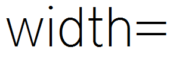

这是一个包含了最少信息的image标签...
一张图片在你的网页上的显示方式取决于image标签所包含的信息。
必需的Image标签属性
image标签总是以一个 "<img" 开始
这个属性很简单地告诉网页你正在描述一张图片。
在网上，非常多的图片是以这四个简单的字符开始的。实例：
<img src="frog.jpg" alt="green frog" />
下一个我们要使用的是 "src="
这个属性告诉网页这个图片在哪里（src 代表 source）。它可以是一个完整的URL地址，比如“http://imagecss.com/frog.png”，或者它也可以是一个相对地址，比如“frog.png”。这个设计是为了简明地在代码中标明图片的地址。实例：
<img src="frog.jpg" alt="green frog" />
下一个属性是 "alt="
从HTML被人们关注开始， “alt=”就一直是image标签一个必要的部分。它是用来描述这张图片内容的文字信息。如果图片是一只青蛙，你可以写成alt="frog"。如果图片是一只带着帽子的绿色青蛙，你就可以写成alt="green frog with hat"。这个元素的使用是非常重要的，同时需要正确地使用它。它可以让失明的人“看见”你的图片。它也可以让搜索引擎知道这张图片是什么。它的目的是在尽可能简要的条件下，准确而通俗地描述你的图片。实例：
<img src="frog.jpg" alt="green frog" />
image标签总是以 "/>" 结束
它告诉网页有关这张图片的信息结束了。
请记住，重要的一点是，在image标签最后一个信息和结束符之间加一个空格。实例：
<img src="frog.jpg" alt="green frog" />
推荐的Image标签属性
上面介绍的几个属性是一个image标签最基本的元素，但是还有其他更多的属性。接下来介绍的这些属性中的许多也被认为是image所必需的。
width= 设定图片的宽度。
width属性说明了图片的宽度。通过设定一个宽度（以及一个高度），你可以使你的网页更快地加载完。Google的站长指南建议你为你使用的每一张图片都设定好宽度和高度。宽度通常都通过pixels（像素）来设定，比如width="30"，它代表了这张图片的宽度为30个像素。宽度也可以通过百分比来设定，比如width="50%"，它代表了这张图片的宽度应该是包含它的那个元素的宽度的50%。推荐使用像素来设定，因为在大多数情况下应该使用图片的实际大小。实例：
<img src="frog.jpg" alt="green frog" width="200" height="200" />
height= 设定图片的高度。
height属性说明了图片的高度。通过设定一个高度（以及一个宽度），你可以使你的网页更快地加载完。Google的站长指南建议你为你使用的每一张图片都设定好宽度和高度。高度通常都通过pixels（像素）来设定，比如height="30"，它代表了这张图片的高度为30个像素。高度也可以通过百分比来设定，比如height="50%"，它代表了这张图片的高度应该是包含它的那个元素的高度的50%。推荐使用像素来设定，因为在大多数情况下应该使用图片的实际大小。实例：
<img src="frog.jpg" alt="green frog" width="200" height="200" />
title= 设定图片的可见标题。
title属性的作用是，设定一个用户在绝大多数浏览器里将鼠标停留在图片上时，将会看到的内容。但是它被定义为一个给图片添加“附加信息”的属性。通常来说，它应该是对图片的一个简短而准确地描述，但它也可以被用作一个和alt属性提供的图片描述信息所不同的形象的提示。想象一下我们的示例图片“frog.jpg”，它有一个alt属性文字信息“green frog”。我们的title文本也可以是“green frog”，但是一个更文艺的title可以是“frog jumping”（或者是任何图片中青蛙正在做的事情）。实例：
<img src="frog.jpg" alt="green frog" width="200" height="200" title="frog jumping" />